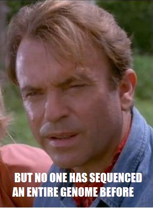

Recreating a DNA Strand

While this may have been true in 1993 when Jurassic Park hit theaters, today, many genomes have been sequenced.
In the following pages, we'll talk about why we would want to sequence DNA (besides creating dinosaurs) and how this is done.